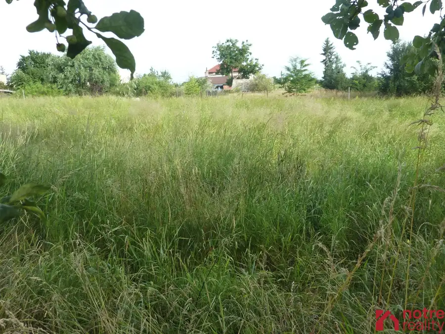
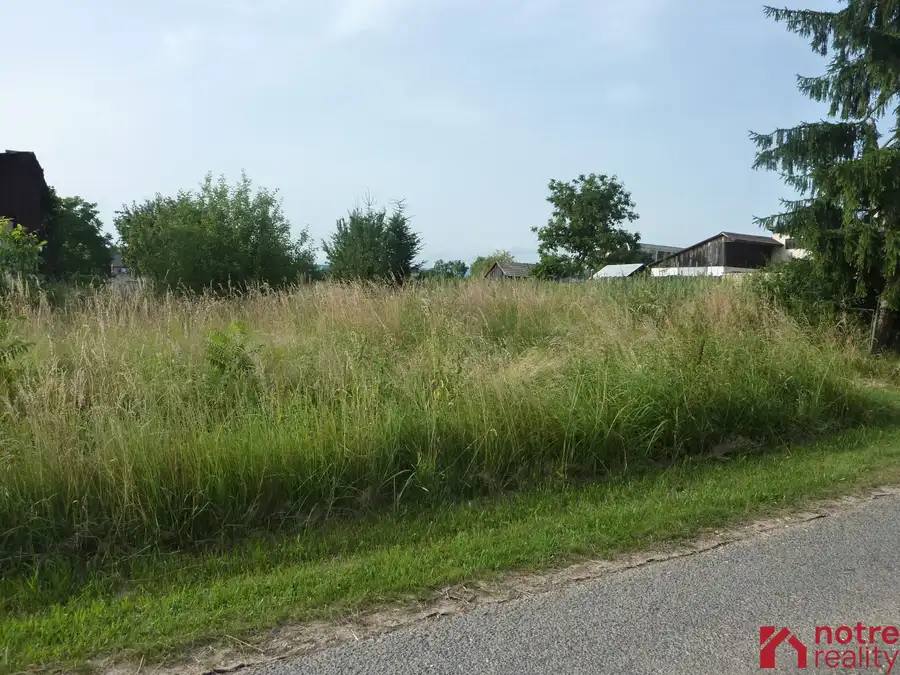
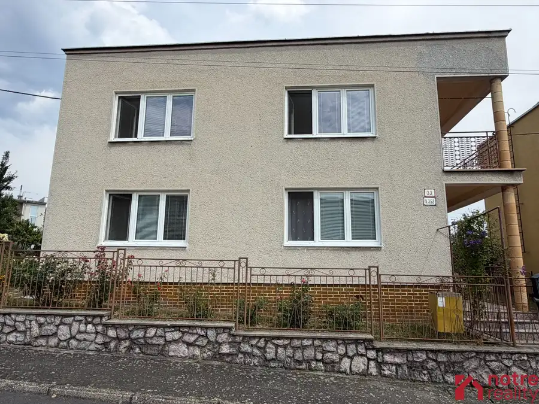
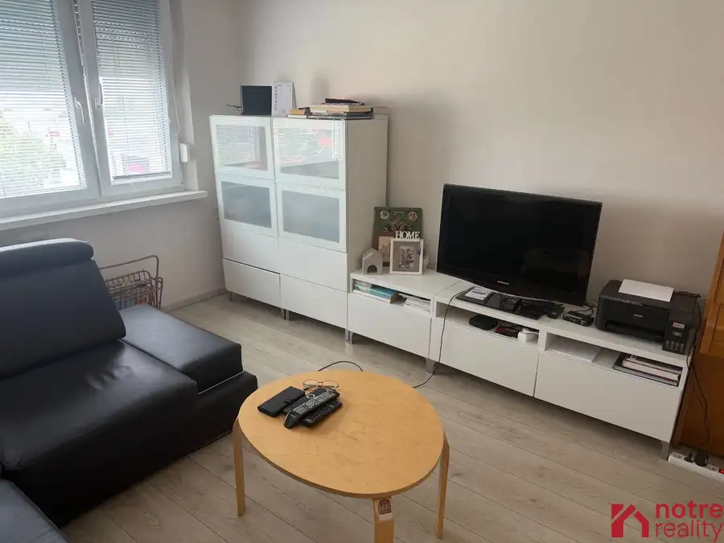
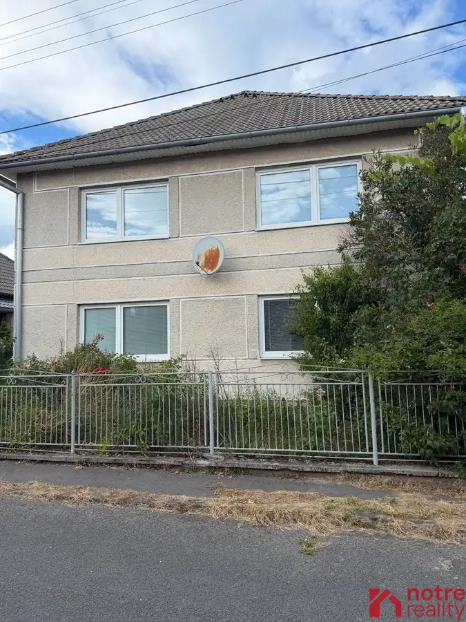
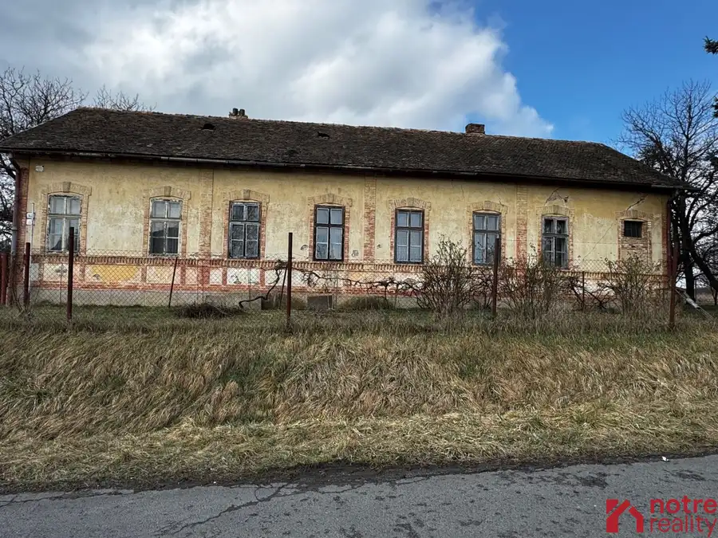
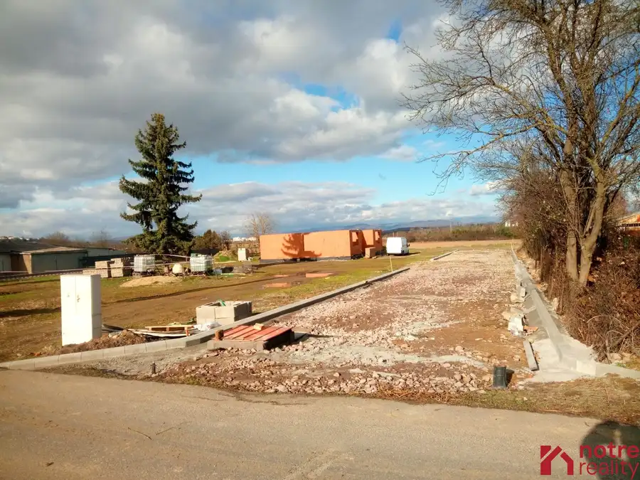
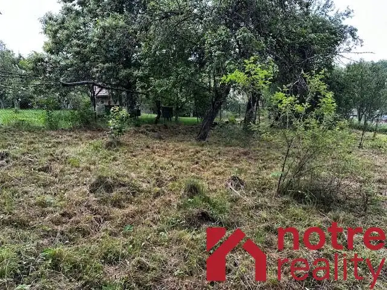
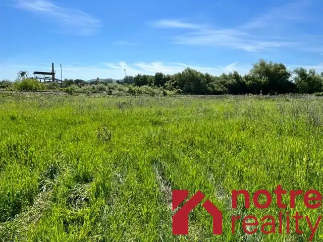

Aktuálna ponuka
Nehnuteľnosti, ktoré ponúkam
9 nehnuteľností na predaj a prenájom. Vyberte typ, alebo napíšte lokalitu.
9 z 9 ponúk

Pozemok4 25 800 €Stavebný pozemok v obci Veľká Ves Veľká Ves 1032 m² Pozemok je vhodný na stavbu rodinného domu. Má výmeru 1032 m2, je slnečný, mierne svahovitý. Inžinierske siete sú v blízkosti. Obec Veľká Ves sa…
Pozemok4 34 799 €Stavebný pozemok v tichej lokalite obce Veľká Ves Veľká Ves 1513 m² Ponúkame Vám na predaj veľká a slnečný pozemok, ktorý je ideálny na stavbu nového rodinného domu, Nachádza sa v tichej časti obce, prístup je po…
Rodinné domy10 175 000 €Poschodový rodinný dom na predaj vo Vidinej Vidiná 6-izbový642 m² Na predaj je tento rodinný dom vo výbornej lokalite Vidinej. Dom je dvojpodlažný tehlový s plochou strechou. Dá sa využívať ako dvojgeneračný, keďže…
Byt9 110 000 €2,5 izbový byt v centre Lučenca Lučenec 3-izbový59.1 m² Neprehliadnite ponuku tohto slnečného bytu, nachádzajúceho sa v úplnom centre Lučenca. Byt pozostáva zo vstupnej chodby, kuchyne, kúpeľne s WC ,…
Rodinné domy10 94 000 €Poschodový rodinný dom v Divíne Divín 4-izbový869 m² Na predaj rodinný dom vo výbornej lokalite obce Divín. Nachádza sa v tichej ulici so samostatne stojacimi rodinnými domami. Stojí na veľkom pozemku o…
Pozemok10 Cena dohodouDva domy na veľkorysom pozemku v Lučenci, časť Ľadovo Lučenec 4647 m² Na predaj je pozemok s výmerou 4647 m2, na ktorom sú umiestnené dva domy. Predný dom je umiestnený pri príjazdovej komunikácii a slúžil na bývanie.…
Pozemok7 Cena dohodouStavebné pozemky v blízkej dostupnosti do mesta Lučenec Lučenec 600 m² Neprehliadnite, výhodná ponuka pre tých ktorí uvažujú o výstavbe rodinného domu !!! Ponúkame posledný stavebný pozemok v blízkej dostupnosti do mesta…
Pozemok6 9 000 €Pozemok v malebnej obci Políchno Polichno 832 m² Na predaj je tento pozemok o výmere 832 m2 v intraviláne obce Políchno. Jeho využitie môže byť ako stavebný pozemok alebo ako záhrada na pestovanie…
Pozemok3 13 600 €Stavebný pozemok v blízkosti kúpaliska v Rapovciach Rapovce 252 m² Ponúkam na predaj stavebný pozemok o výmere 252 m2 nachádzajúci sa v Rapovciach . Pozemok je rovinatý, inžinierske siete ako elektrina a voda sa…Tomuto výberu zatiaľ nezodpovedá žiadna ponuka. Napíšte mi, čo hľadáte.